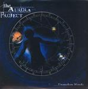

| Artist: | The Aurora Project |
| Title: | Unspoken Words |
| Label: | DVS Records |
| Length(s): | 63 minutes |
| Year(s) of release: | 2005 |
| Month of review: | [05/2006] |
| 1) | Unspoken Words I | 2.25 |
| 2) | The Betrayal | 4.46 |
| 3) | SD : 9796.823 | 1.00 |
| 4) | Unspoken Words II | 2.27 |
| 5) | The Untold Prophecy | 5.37 |
| 6) | The Event Horizon | 7.03 |
| 7) | System Log (9608,10987) | 5.55 |
| 8) | The Gathering | 7.15 |
| 9) | SD : 9843.123 | 0.42 |
| 10) | Unspoken Words III | 2.42 |
| 11) | SD : 9862.000 | 0.51 |
| 12) | Nocturnal Lament | 6.41 |
| 13) | SD : 9890.114 | 0.53 |
| 14) | The Resurrection | 8.38 |
| 15) | Untitled | 5.51 |
One of the interesting features is the melodic development in the band's compositions: even in vocal sections we regularly hear melodies on especially the guitar. This adds warmth and depth that is far from usual. Having said that, some of the vocal section lack strength, which is particularly striking because they contrast with the many that dó have that sort of strength.
...Unspoken Words is based on a concept by Gooys inspired by the dictum "I feel, therefore I am", resulting in a science fiction type story. Apart from the fact that this can be found in the album's lyrical themes, we also see it reflected in the song structure, including short narratives (for instance parts of the Unspoken Words tracks) and shorter intermediate sections. If these were brief sections only, I wouldn't have minded them much, however System Log is almost only narrative telling a section of the story focusing on the Gnarus Unit. No, I don't know what it is either. This has something of an arresting effect on the musical flow, no matter how well done. These narrative bits have background music that lies somewhere between EM and esotherics.